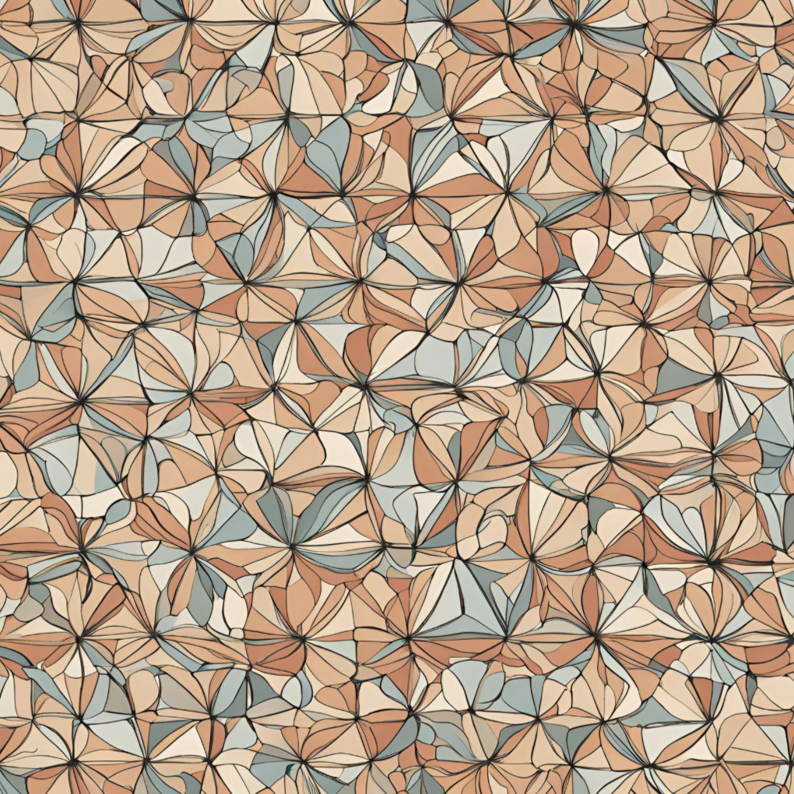

Representation theory of finite groups of Lie type

(↑ "Deligne-Lusztig theory" drawn by AI ("Magic Studio"); see Week 1 Notes for some explanation)
Tuesday 2,3,4 (9:10-12:10) @ Astro-Math Building 201
Office Hour: Tuesday 13:30-15:00 @ Astro-Math Building 507
References
[Ser77] Serre, Linear representations of finite groups.
[BH06] Bushnell--Henniart, The Local Langlands Conjecture for GL(2).
[Spr09] Springer, Linear algebraic groups, second ed.
[DL76] Deligne--Lusztig, Representations of reductive groups over finite fields.
[Car85] Carter, Finite groups of Lie type: Conjugacy classes and complex characters.
[DM20] Digne--Michel, Representations of finite groups of Lie type.
[GM20] Geck--Malle, The character theory of finite groups of Lie type: a guided tour.
Notice
- Lecture will not be given on 2024-09-17 (National Holiday).
- Lecture on 2024-10-08 will be given by Prof. Cheng-Chiang Tsai (due to my family matter). Thank you very much, Cheng-Chiang!!!
- Lecture will be given online on 2024-11-12 (I'll be at Boston in USA).
- Lecture will not be given on 2024-12-03 (I'll be at Oberwolfach in Germany).
Week 1 (2024-09-03)
Course overview
Week 2 (2024-09-10)
Representations of GL_2(F_q)
Week 3 (2024-09-24)
Algebraic groups
Week 4 (2024-10-01)
Reductive groups
Week 5 (2024-10-08)
Deligne-Lusztig varieties
Week 6 (2024-10-15)
Deligne-Lusztig representations
Week 7 (2024-10-22)
Deligne-Lusztig character formula
Week 8 (2024-10-29)
Week 9 (2024-11-05)
Week 10 (2024-11-12) ONLINE
Week 11 (2024-11-19)
Week 12 (2024-11-26)
Week 13 (2024-12-10)
Week 14 (2024-12-17) ?
Please feel free to contact me!
Office: Astro-Math Building 507
Mail: masaooi at ntu.edu.tw
Last updated: 2024-10-07.